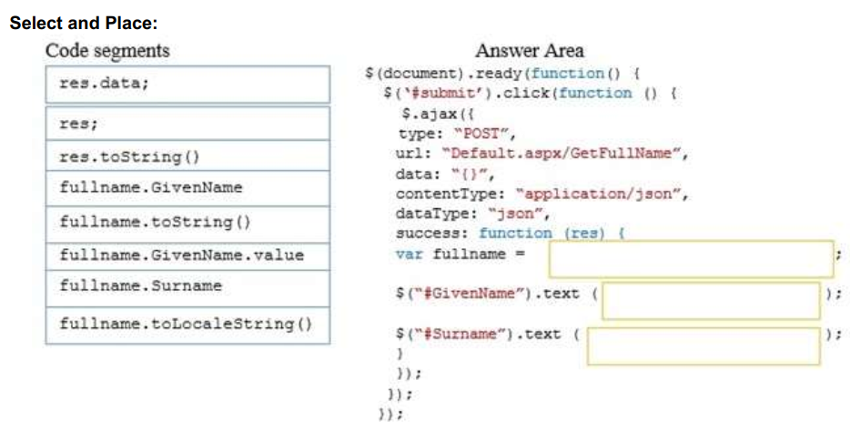
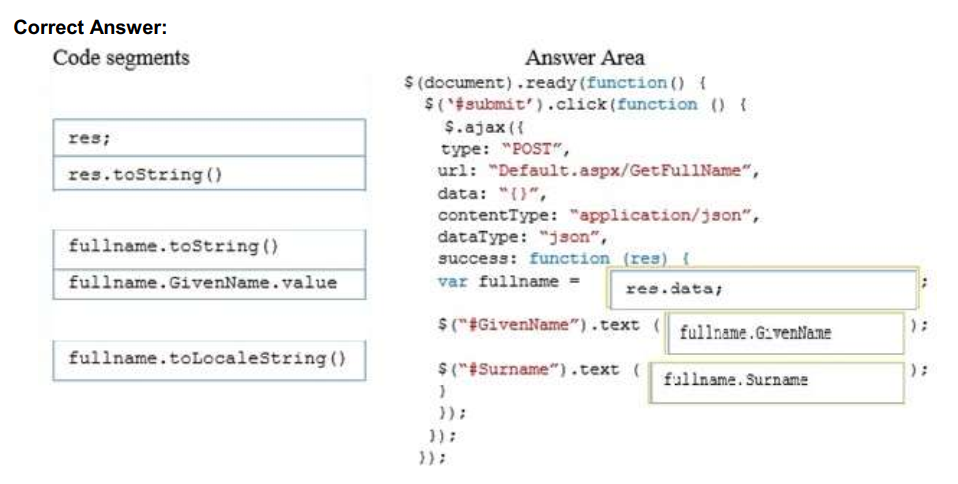

QUESTION 97
DRAG DROP
You develop an HTML application that calls a web service to retrieve JSON data. The web service
contains one method named GetFullName that returns an Object named data. The data object contains
two properties named GivenName and Surname.
You need to load data from the web service to the webpage.
How should you complete the relevant code? (To answer, drag the appropriate code segment or code
segments to the correct location or locations in the answer area. Use only code segments that apply.)
Desarrolla una aplicación HTML que llame a un servicio web para recuperar los datos de JSON. El servicio web
contiene un método llamado GetFullName que devuelve un objeto llamado data. El objeto data contiene
dos propiedades llamadas GivenName y Surname.
Necesitas cargar los datos del servicio web a la página web.
¿Cómo debe completar el código correspondiente?

La respuesta correcta es

Explicación:
Puedes acceder a las propiedades de los objetos de dos maneras:
objectName.propertyName o objectName[propertyName]
La frase dice que el JSON tiene un objeto denominado 'data' que tiene dos propiedades (GivenName y SurName).
Para tener acceso a estas propiedades en el método success, primero hay que recuperar la respuesta (con 'res').
A continuación, debe tener acceso al objeto ('datos' >> por lo que 'res.data').
Por último, puede tener acceso a las propiedades (por ejemplo, 'res.data.GivenName').